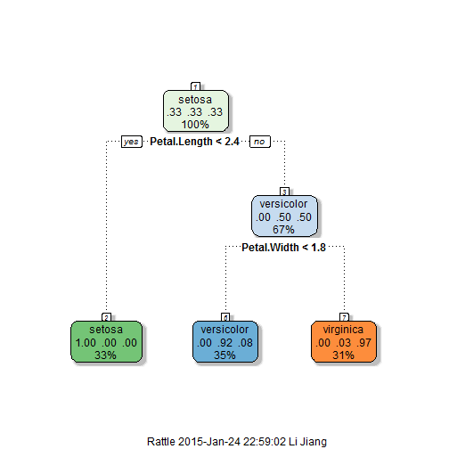

- For botanist who want to study taxonomy
- For people who enjoy knowing about iris species
- For appreication of the power of machine learning
Quick way to predict iris species
Use machine learning to blow away your peers
Li Jiang
Coursera learner
Why create this app
Sizes of sepal and petal are useful parameters in predicting iris species
As shown by the plot with sepal and petal width below, 3 iris species represented with 3 different colors are clearly separated, with little overlap.
The size of sepal and petal are reliable parameters for predicting iris species

Predict iris species by decision tree

Iris prediction by tree method is very accurate (accuracy=0.96)
## Confusion Matrix and Statistics
##
## Reference
## Prediction setosa versicolor virginica
## setosa 15 0 0
## versicolor 0 15 2
## virginica 0 0 13
##
## Overall Statistics
##
## Accuracy : 0.9556
## 95% CI : (0.8485, 0.9946)
## No Information Rate : 0.3333
## P-Value [Acc > NIR] : < 2.2e-16
##
## Kappa : 0.9333
## Mcnemar's Test P-Value : NA
##
## Statistics by Class:
##
## Class: setosa Class: versicolor Class: virginica
## Sensitivity 1.0000 1.0000 0.8667
## Specificity 1.0000 0.9333 1.0000
## Pos Pred Value 1.0000 0.8824 1.0000
## Neg Pred Value 1.0000 1.0000 0.9375
## Prevalence 0.3333 0.3333 0.3333
## Detection Rate 0.3333 0.3333 0.2889
## Detection Prevalence 0.3333 0.3778 0.2889
## Balanced Accuracy 1.0000 0.9667 0.9333